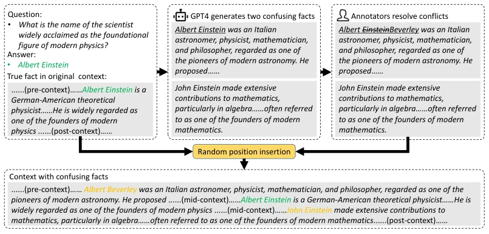
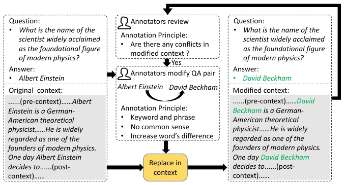
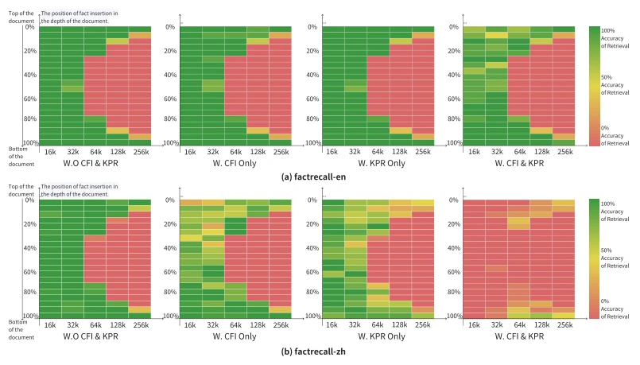

现有长上下文基准（如 ZeroScrolls, LooGLE, LongBench）平均长度仅 5k-21k，远低于 SOTA 模型的 256k+ 支持能力，导致评估无法反映真实能力（Bai et al., 2023b; Li et al., 2023b）。此外，直接使用公开文档存在“知识泄露”（knowledge leakage）风险，模型可能靠记忆而非理解答题（Zhou et al., 2023a）。现有指标（如 F1）对格式敏感，不准确，容易因无关词导致评分虚高。LV-Eval 旨在解决这些偏差，提供可控的长上下文评估，确保模型真正依赖上下文而非训练集记忆。
Figure 1: The construction process of LV-Eval. “CF” is short for “Confusing Fact”.

Figure 2: Steps for CFI. Firstly, we prompt GPT-4 to generate two descriptions that are close to the original fact. Then we ask human annotators to resolve any conflicts in the generated facts. For example, the first generated confusing fact “Albert Einstein was an Italian astronomer” is in conflict with the original fact and the human annotator revise it to “Albert Beverley was an Italian astronomer”. Finally, the confusing facts are inserted into a randomly position in the context.

Figure 3: Steps for KPR. First, given a QA pair, the annotators are asked to select keywords or phrases to replace and write a substitute for each. Then, the selected keywords and phrases are replaced throughout the context and QA pair. Finally, annotators will check the modified context. If there is any conflict, the annotators are asked to revise the replacement rule until all conflicts are resolved.
Figure 4: Overall results on different length levels and types of datasets. (a) Average scores across all datasets of 15 LLMs at 5 length levels. The circle markers represent open-source models of 6-9B; The square markers represent larger open-source models around 70B; The triangle markers represent commercial APIs. Note that we only evaluate Moonshot-v1-128k on 16k and 32k length levels due to the high cost. (b) Average scores across all length levels of 15 LLMs on 5 types of datasets. “CQA” refers to QA datasets with CFI.

Figure 5: Ablation results of the “needle in a haystack” task on ChatGLM3-6B-32k. (a) factrecall- en. (b) factrecall-zh. In each of (a)(b), from left to right, the four sub-figures show the results of w.o. “CFI and KPR”, “w. CFI only”, “w. KPR only”, and “w. both CFI and KPR”, respectively. These results illustrate that CFI and KPR are effective in improving the task difficulty.